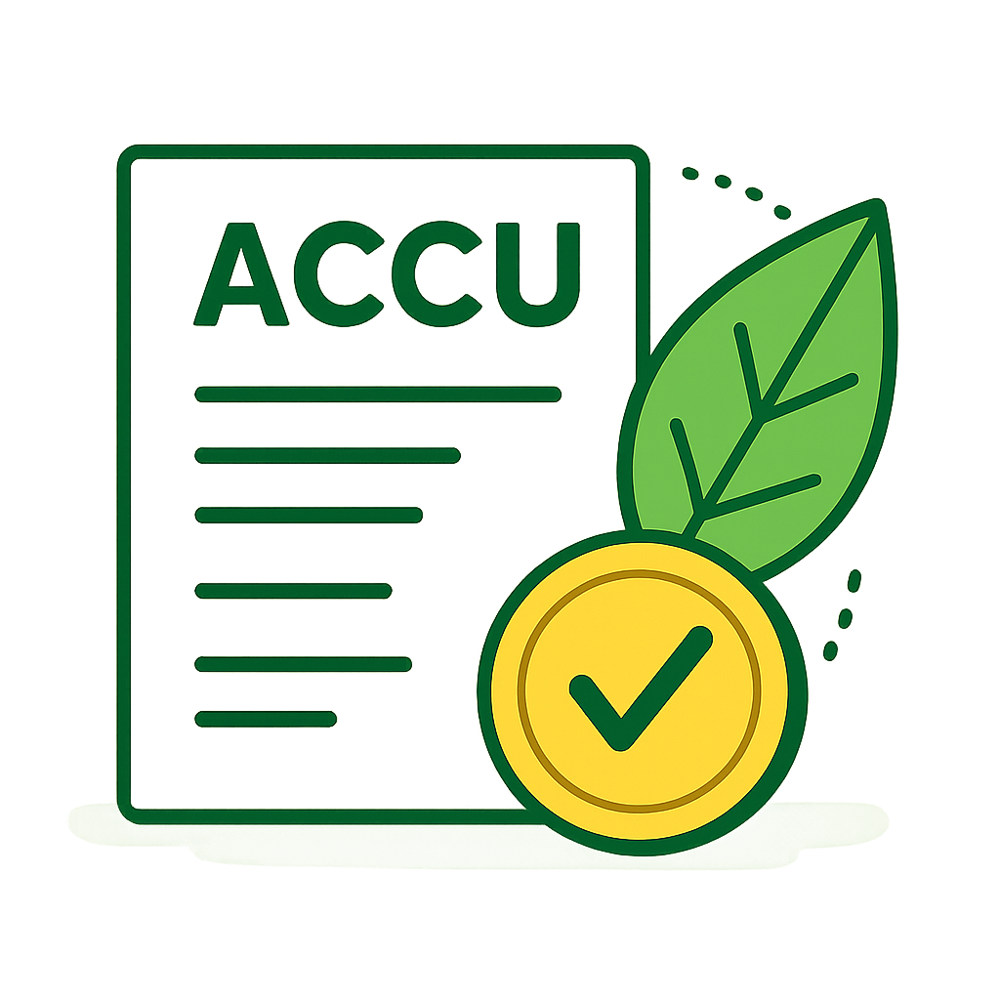
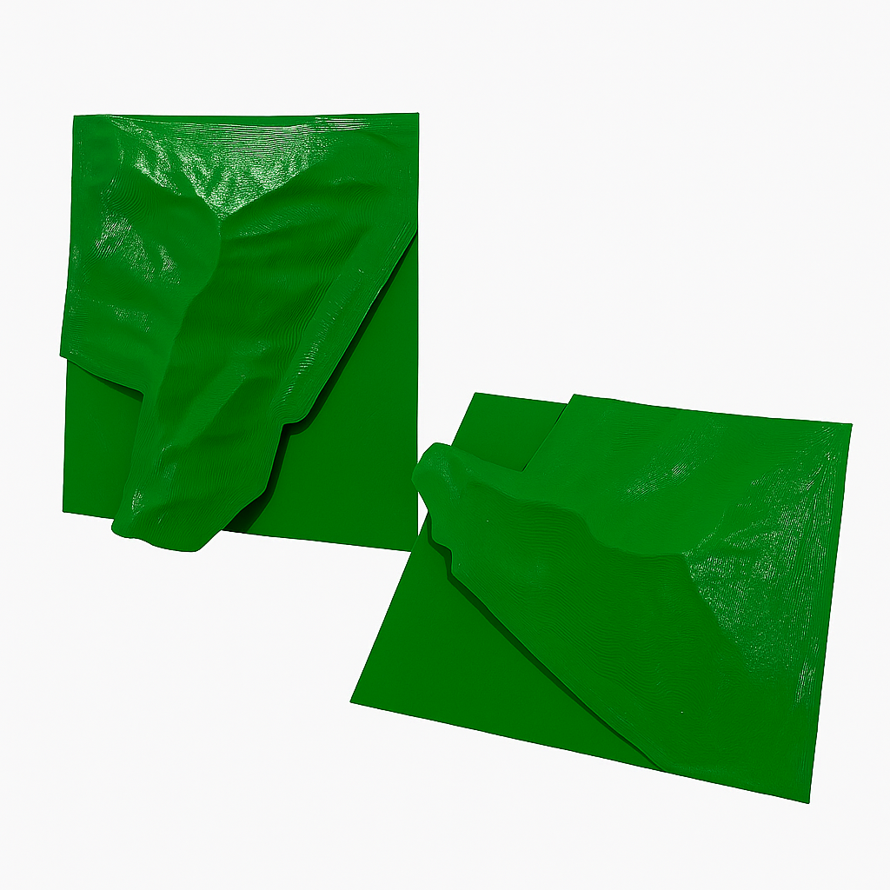

Farm Mapping • Soil Testing & Analysis • Carbon Credit Assessment • 3D Farm Modeling
Using advanced GPS and satelite technology, we deliver highly accurate farm maps that assist with land management, planning, and productivity improvement. Our maps provide essential insights for fencing, irrigation, crop layout, and infrastructure.

Comprehensive soil testing and analysis to determine nutrient levels, soil health, and composition. We provide detailed reports and tailored recommendations to improve yields, crop resilience, and long-term soil sustainability.

We assess your property’s eligibility for Australian Carbon Credit Units (ACCUs). Our team evaluates vegetation, soil carbon, and land-use practices to determine potential carbon sequestration, helping you participate in carbon markets and unlock additional revenue streams.
Our 3D farm models bring your property to life with accurate topographic detail. These interactive models assist with planning, erosion control, water flow analysis, and infrastructure placement, allowing you to visualize outcomes before making changes.
